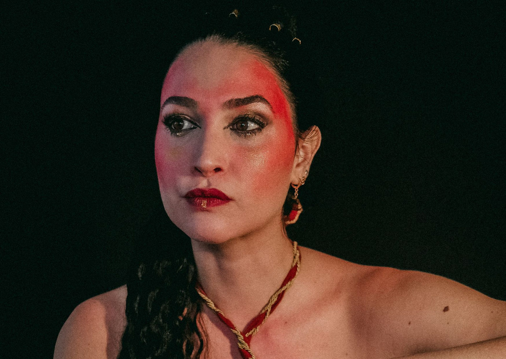

"Fractal - Teatro Labirinto" Estreia no Teatro Commune para Curta Temporada

O espetáculo Fractal - Teatro Labirinto - Para Reconectar o Feminino estreia no Teatro Commune, em São Paulo, a partir de 17 de outubro, trazendo uma proposta interativa e inovadora que celebra o universo feminino.
Em cartaz até 21 de novembro, com sessões às quartas e quintas-feiras, às 20h, a peça promete proporcionar uma experiência teatral imersiva, onde cada apresentação será única, moldada pela interação do público. Os ingressos estão à venda na Sympla.
Um Espetáculo que Celebra o Feminino
Idealizado e produzido por Luiza Tabet, Fractal é o resultado de dois anos de pesquisa e colaboração com mais de 40 mulheres, explorando as múltiplas facetas da mulher contemporânea. A peça aborda temas como misoginia, assédio, racismo, gordofobia, transfobia, capacitismo e sexualidade, trazendo à tona questões que permeiam a sociedade patriarcal. “Essa peça é uma celebração de todos os femininos que vieram antes e dos nossos. Queremos promover essa celebração através da força que esse coletivo tem”, destaca a produtora.
Com texto de Luciana Bollina e direção de Lenita Ponce, a peça utiliza um formato de jogo em que a plateia tem um papel ativo, influenciando a narrativa a cada apresentação. Através de um oráculo, o público ajuda a definir quais das nove cenas criadas serão apresentadas, tornando cada sessão uma experiência diferente e imprevisível.
Diversidade e Representatividade no Palco
Fractal apresenta um elenco diverso, composto por 12 atrizes de diferentes corpos, etnias, idades e histórias de vida, incluindo mulheres brancas, pretas, asiáticas, indígenas, trans, PCDs, com corpos magros, gordos, altos e baixos. O elenco inclui Ana Paula Valverde, Tabata Contri, Graça Cunha, Raquel Higa, Mariah Viamonte, Karol Kaysá, Rafa Pimenta, Beatriz Cavalcanti, Luiza Tabet, Livia Graciano, Daniela Carinhanha e Lídia Gasque. Cada uma dessas artistas contribui com uma entrega autêntica e emocional, criando um coletivo que reflete a pluralidade do feminino.
Trilha Sonora e Imersão Sensorial
A trilha sonora, dirigida por Graça Cunha e Dani Morais, é um dos destaques do espetáculo, com músicas que conectam o público à ancestralidade feminina. Embora não seja um musical, as canções foram cuidadosamente selecionadas para complementar a narrativa e criar uma atmosfera imersiva. O repertório inclui desde cantos indígenas ancestrais, como "Nhamandu Mirim", até composições contemporâneas que enriquecem a experiência teatral.
Equipe Criativa 100% Feminina
A equipe criativa de Fractal é formada inteiramente por mulheres, que contribuíram para a construção de um espetáculo imersivo e rico em detalhes. A direção de movimento, assinada por Anna Rodrigues Carvalho, garante fluidez e expressão corporal, enquanto a cenografia e figurinos, desenvolvidos por Luiza Tabet, Lenita Ponce, Adriana Franconeri, Fátima Catão e Louise Helène, criam um ambiente visualmente deslumbrante. A iluminação de Vânia Jaconis e o design de som de Cecília Lüzs completam a experiência sensorial, transformando o palco em um verdadeiro labirinto de emoções.
Uma Experiência Transformadora
Fractal - Teatro Labirinto convida o público a mergulhar em uma jornada profunda sobre o feminino, a diversidade e as relações com a sociedade. Para Luiza Tabet, o espetáculo é um convite para uma experiência transformadora e uma celebração da força do coletivo e do poder da arte como ferramenta de transformação social.
Serviço
Espetáculo: Fractal - Teatro Labirinto - Para Reconectar o Feminino
Local: Teatro Commune – Rua da Consolação, 1218, Higienópolis, São Paulo
Temporada: De 17 de outubro a 21 de novembro – quartas e quintas, às 20h
Ingressos: R$50 (inteira) | R$25 (meia)
Compra de Ingressos: Sympla
Duração: 90 minutos
Classificação: 16 anos
Não perca a chance de vivenciar essa imersão no universo feminino, repleta de emoção, diversidade e interação.